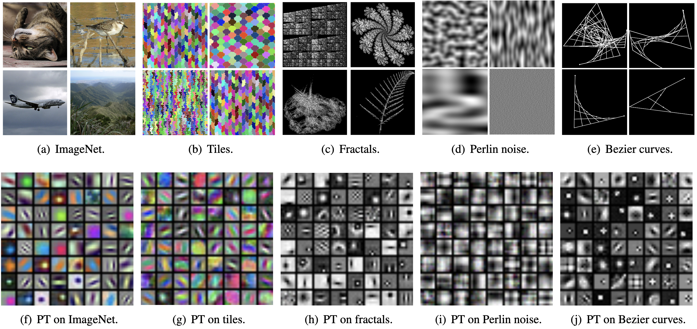
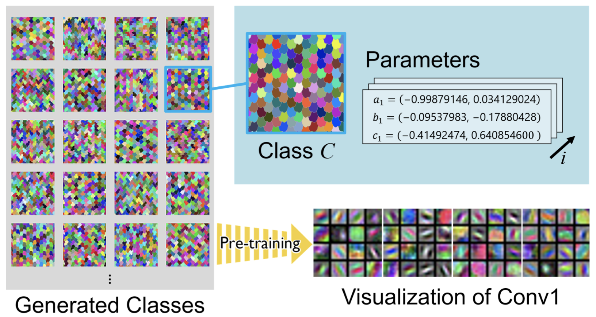
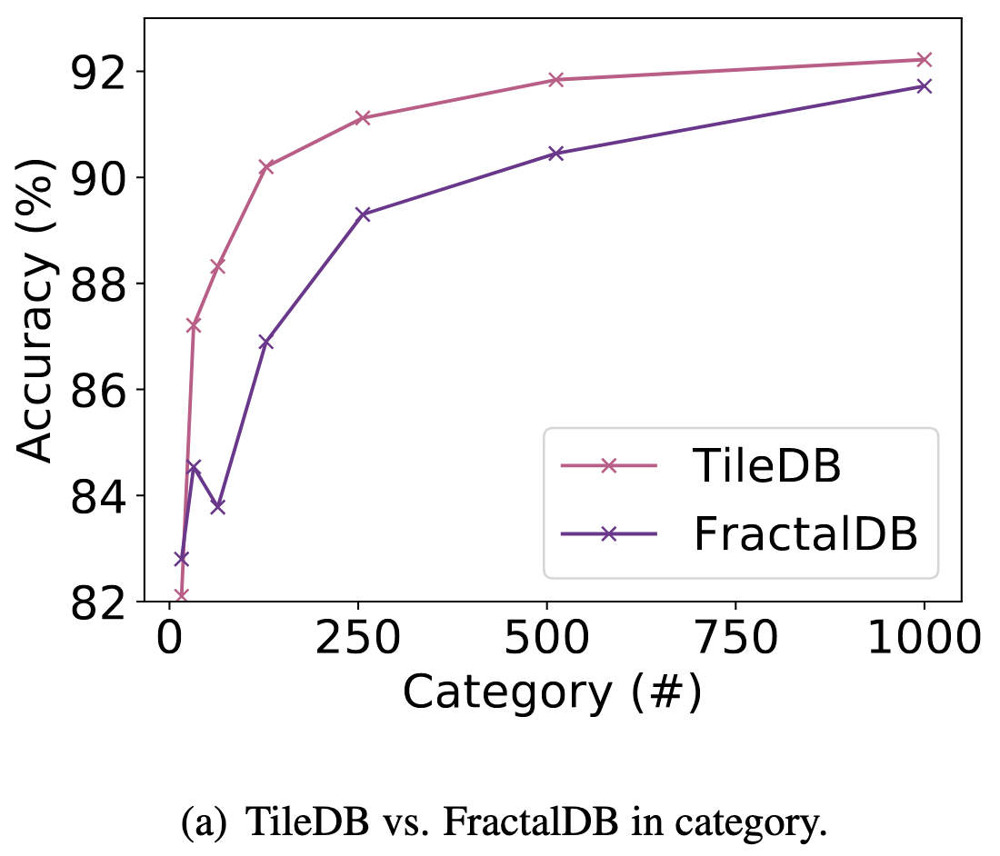
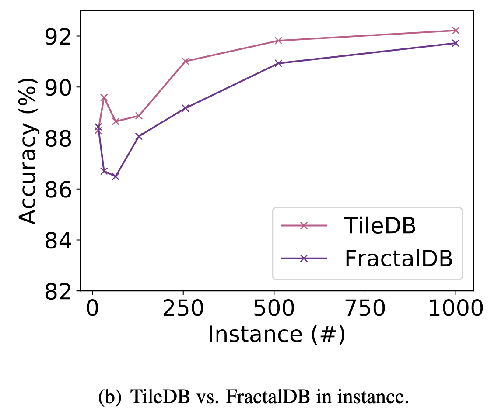

Formula-driven Supervised Learning with Recursive Tiling Patterns
ICCV 2021 Workshop on Human-centric Trustworthy Computer Vision
Hirokatsu Kataoka1 Asato Matsumoto1,2 Eisuke Yamagata3
Ryosuke Yamada1,4 Nakamasa Inoue3 Yutaka Satoh1,2
1: AIST 2: Univ. of Tsukuba 3: TITech 4: TDU
Abstract
Can convolutional neural networks pre-trained without natural images be used to assist natural image understanding? Formula-Driven Supervised Learning (FDSL) automatically generates image patterns and their category labels by assigning a well-organized formula. Due to the characteristics of not using natural images in pre-training phase, FDSL is expected to develop a trustworthy vision-based system in terms of human-annotation-free, fairer and more transparent datasets. In this paper, we propose TileDB which consists of recursive tiling patterns in the whole image and evaluates the family of FDSL such as the datasets consist of Perlin noise and Bezier curves. Experimental results show that our proposed TileDB pre-trained model performs much better than models trained from scratch, surpasses a similar self-supervised learning (SSL), and performs similarly to the models pre-trained with 100k-order natural image datasets such as ImageNet-100 and Places-30. By comparing to the FractalDB pre-trained model, the TileDB pre-trained model achieves better performances in a compact dataset (< 1,000 categories). Moreover, the image representation trained on TileDB can extract similar features to the ImageNet pre-trained model even though the training images are non-trivially different.
Tile DataBase (TileDB)
Comparisons of feature representations between pre-training with supervised dataset (a) and FDSL datasets (b)-(e). According to our experimental results, the models pre-trained with FDSL can be a close representation to a model pre-trained with human-annotated dataset. Surprisingly, pre-training (PT) representations on tiles (g) are 'obviously' similar to the representations of PT on ImageNet (f), while the two image sets (a) and (b) are quite different. Also, the performance rates with the TileDB pre-trained model are relatively close to those from the ImageNet/Places pre-trained models (e.g., TileDB 78.0 vs. ImageNet 79.5 on Places-30).

Framework
An overview of our method is shown in the following figure. Both training images and their categories are automatically generated with a mathematical formula. Basic hexagon patterns and their randomly changing points (parameters a, b, and c) generate image patterns and their categories as a TileDB. Based on the parameter intervals, the various (pre-)training categories are assigned in the mathematical formula.

Experimental Results
Figures (a) and (b) illustrate the relationship between performance rates on CIFAR-10 and #category/#instance configurations in pre-training. Note that the we made these figures in our implementation. The final accuracy in FractalDB-10k (94.1\%) [Kataoka+, ACCV20] is better than the TileDB pre-trained model, however, TileDB pre-training with fewer #category/#instance surpasses the FractalDB pre-training on CIFAR-10 dataset. This shows that TileDB does not require a relatively large dataset like FractalDB to create a pre-trained model. According to the results, we confirmed the TileDB pre-trained model can be made without any difficult parameter tunings like a FractalDB pre-trained model.


Citation
@inproceedings{KataokaICCV2021WS,
author = {Kataoka, Hirokatsu and Matsumoto, Asato and Yamagata, Eisuke and Yamada, Ryosuke and Inoue, Nakamasa and Satoh, Yutaka},
title = {Formula-driven Supervised Learning with Recursive Tiling Patterns},
journal = {ICCV 2021 Workshop on Human-centric Trustworthy Computer Vision (HTCV)},
year = {2021}
}
Acknowledgement
- This paper is based on results obtained from a project, JPNP20006, commissioned by the New Energy and Industrial Technology Development Organization (NEDO).
- This work was supported by JSPS KAKENHI Grant Number JP19H01134.
- Computational resource of AI Bridging Cloud Infrastructure (ABCI) provided by National Institute of Advanced Industrial Science and Technology (AIST) was used.